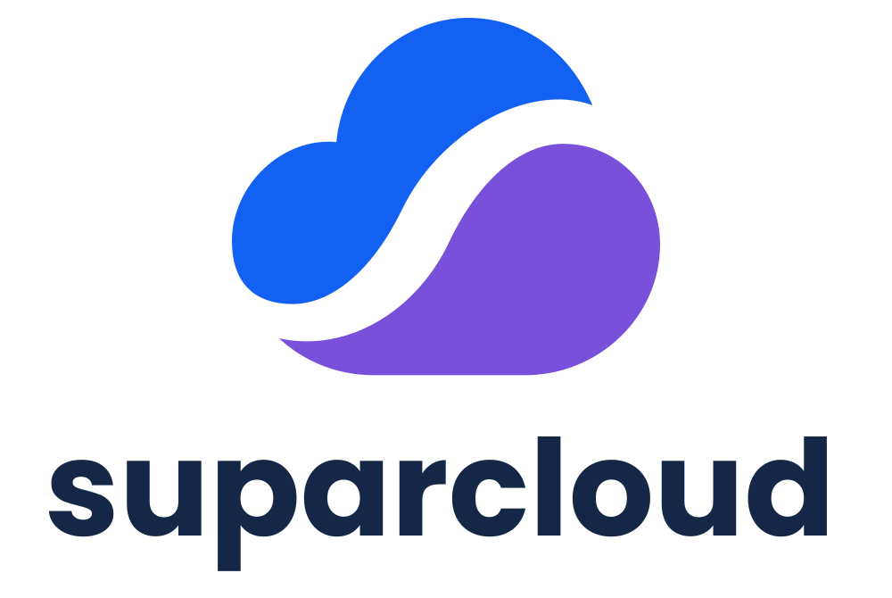
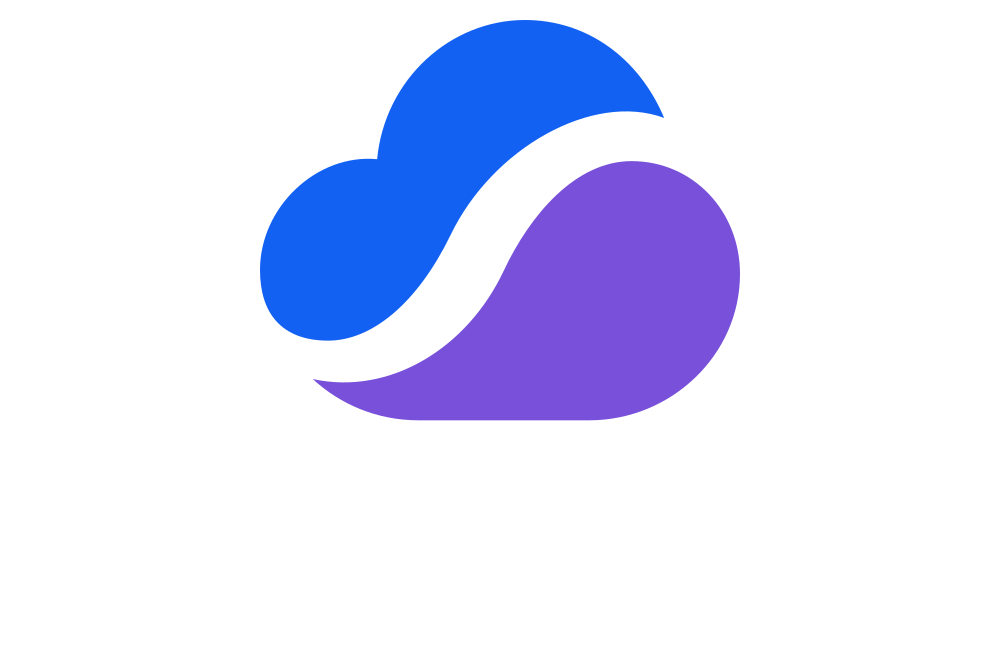

SUPARCLOUD / BRAND SYSTEM / V1.0
Our identity,
in the open.
A clear, practical identity for tools that make cloud infrastructure simpler. Everything you need to show up as SuparCloud.
01 / One mark.
Room to move.
The cloud silhouette carries an open, flowing “s.” In the compact horizontal lockup, it also serves as the first letter of the name. Use the full stacked wordmark when more vertical space is available.








Asset provenance: these editable vector masters are reconstructed from the supplied blue-and-purple reference images. The curves and outlined Poppins wordmark are a production interpretation, not the original designer’s source artwork. Earlier archive logos use a different identity and are intentionally excluded.
02 / A little color.
A lot of clarity.
Navy anchors the identity. Blue leads. Violet adds a distinctive second note. Give the colors room to breathe on white and pale surfaces.
#1261F3Primary actions and the top half of the mark. White text passes AA on this blue.
#7850DABrand accents and the lower half of the mark. White text passes AA on this violet.
#142747Headings, body emphasis, and dark backgrounds.
#F7F9FCQuiet section backgrounds and supporting surfaces.
#536178Secondary text on white or Cloud white.
#DEE4EEDecorative dividers. Do not use for text or essential control boundaries.
Use roughly 70% white or pale surfaces, 20% navy and text, and 10% blue and violet accents. Keep gradients out of the core logo. Use a solid background behind small marks. Palette values are standardized for this kit, not sampled as authoritative values from a compressed screenshot. Download color tokens.
03 / Clear words.
Confident type.
Poppins Bold for headlines and wordmarks. The system sans-serif stack for interfaces and body copy. The font is self-hosted; no external font requests.
POPPINS / BOLD 700
Less friction.
More possibility.
SYSTEM SANS / REGULAR 400
Good tools make the next step clear. Use short sentences, generous spacing, and words that help people get something done.
Body: 16–18px / 1.65 line height
Headings: 30–62px / 1.15–1.25
Labels: 11–12px, uppercase with tracking
Keep paragraph lines around 55–75 characters. Use navy for headings and slate for supporting text. Poppins is distributed under the SIL Open Font License; the logo lettering is outlined and needs no installed font.
04 / Give it space.
A consistent mark is more useful than a complicated set of effects. Keep it legible and let the content do the talking.
Clear space
Keep at least one quarter of the symbol’s height clear on every side of a lockup. Platform avatars include extra padding for circular crops.
Minimum size
Horizontal: 140px wide. Stacked: 160px wide. Symbol: 24px wide. At 16px, use the supplied favicon rather than the wordmark.
Background choice
Full color on white or Cloud white. Reverse on deep navy. White on blue, violet, or a solid dark surface. Use a solid panel over busy photographs.
Keep the geometry
Scale proportionally. Never stretch, rotate, add shadows to official lockups, or rearrange the wordmark. Decorative standalone marks may be used at large sizes on the website.
Accessible interfaces
Use visible keyboard focus, text labels, and underlined inline links. Never communicate status by color alone. Respect reduced motion preferences.
Layout & surfaces
Use an 8px spacing rhythm, 8px button corners, and 16–20px card corners. Favor whitespace and thin dividers over dense boxes and heavy effects.
05 / Useful.
Human. Direct.
Write as a builder helping another builder. Be specific about the problem and honest about what the product does.
Our promise
Less friction. More possibility.
Our purpose
Build open-source tools that simplify cloud infrastructure and help small teams bring useful software into the world.
Our name
Write “SuparCloud” in prose and “SuparShip” for the project. Use lowercase only in the designed wordmarks, domains, and repository names.
SAY THIS
“Give every pull request a preview environment.”
Concrete, useful, and verifiable.SKIP THIS
“Revolutionize your cloud journey with limitless innovation.”
Broad promises hide the actual benefit.06 / Ready to use.
SVG is the source of truth for scaling. PNG exports are included for platforms that need raster uploads. Keep the avatar’s padding when a platform crops to a circle.
| Use | Size | Asset |
|---|---|---|
| Website header | SVG; PNG widths 320, 640, 1280, 2560px | Horizontal SVG |
| Presentations & documents | SVG; PNG widths 320–2560px | Stacked SVG |
| GitHub / social profile | 400 × 400 or 1024 × 1024px | Light PNG · Dark PNG · Blue PNG |
| High-resolution avatar | 1024 × 1024px | PNG |
| Browser tab | SVG; ICO includes 16, 32, 48px | SVG · ICO |
| Apple home screen | 180 × 180px | PNG |
| Web app icons | 192 × 192 and 512 × 512px | 192px · 512px |
| Social link preview | 1200 × 630px | PNG · SVG |
| Standalone symbol | SVG; PNG widths 32, 64, 128, 256, 512, 1024px | SVG |


These are practical export sizes, not a guarantee of every platform’s current upload requirements. All light, reverse, navy, and white variants are included in the full download. Screen colors use sRGB; proof colors separately for print.
Make it unmistakably SuparCloud.
Logos, avatars, social card, color tokens, font license, and the style guide.